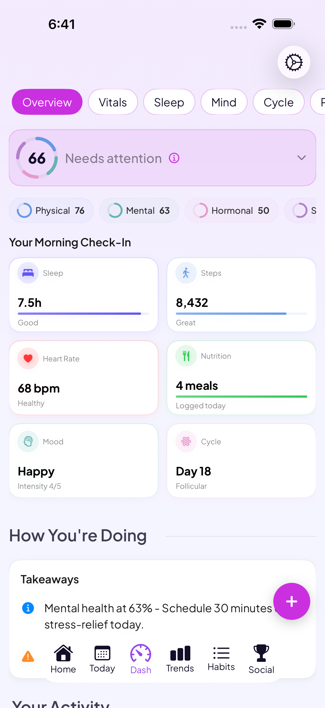

A PCOS tracker built into a whole-health app
Cycles that don't follow a calendar, symptoms that come and go, labs to keep straight. Go Go Gaia is built to keep tracking through irregular and missing periods, log PCOS-specific symptoms, and bring your bloodwork, glucose, and wearable data into the same place as your cycle history.
Download Go Go GaiaNot on iPhone? Use the web app in any browser.
On a computer?
Scan to download on your phone.

Built for PCOS
Irregular cycle tracking
Predictions are based on your own logged data instead of a standard 28-day assumption, so tracking keeps working through irregular or missing periods rather than resetting.
PCOS symptom logging
Log acne, hair changes, weight, and fatigue alongside the rest of your cycle and symptom history, in seconds.
Lab & bloodwork tracking
Scan or import bloodwork like TSH, AMH, and progesterone, and see values trend over time next to your symptoms.
Glucose & wearable data
Dexcom and Libre glucose readings sync in automatically, alongside sleep, HRV, and temperature from Apple Watch, Oura, and Garmin.
Medication & supplement tracking
Log medications and supplements like metformin, inositol, or birth control, and see them tracked over time alongside your symptoms.
Correlation insights
A correlation engine surfaces patterns from your own data, like which foods, habits, or lifestyle factors line up with your symptoms.
How it fits together
Other apps track each thing in its own silo: cycle here, symptoms there, glucose in a separate app entirely. Go Go Gaia keeps your cycle, symptoms, mood, sleep, nutrition, labs, and glucose in one place, then surfaces the real patterns from your own data. If you're also trying to conceive with PCOS, ovulation tracking and wearable-based temperature data sit in the same app, so your cycle and fertility history carry through together instead of living in separate tools.
What you can log
Privacy & trust
PCOS data, including cycle history, symptoms, and labs, is personal. Go Go Gaia doesn't run ads and doesn't sell your data. You can export or delete your data anytime.
Frequently asked questions
Track your PCOS the way it actually shows up
Cycles, symptoms, labs, and glucose, all in one place, all connected.
Download Go Go GaiaNot on iPhone? Use the web app in any browser.
Tracking for other conditions
IVF tracking · Endometriosis tracking · Perimenopause tracking · Cycle syncing · All conditions